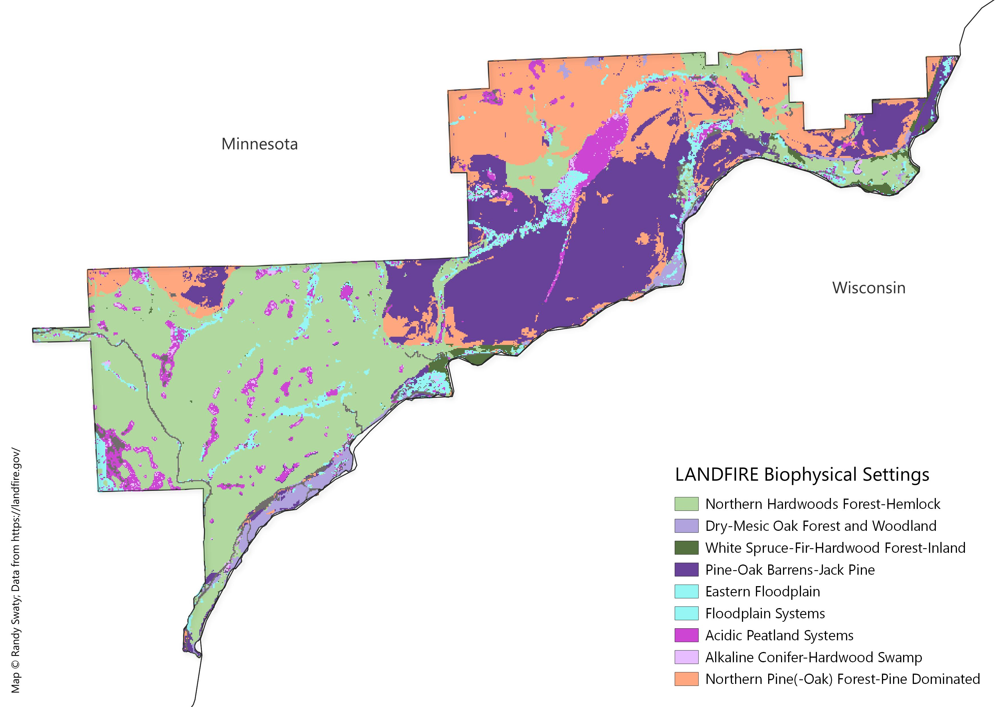
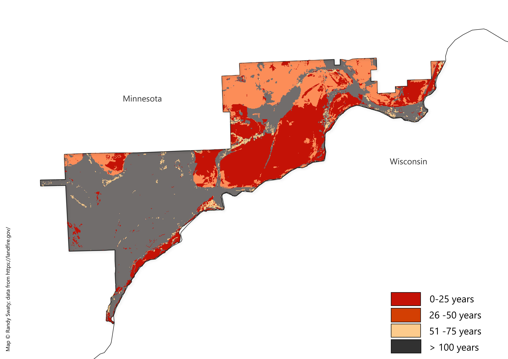

Past
LANDFIRE’s Biophysical Settings (BpSs)
BpS models represent the vegetation system that may have been dominant on the landscape prior to Euro-American settlement. These models are based on a combination of the current environment and an approximation of the historical disturbance regime. Read more.
Check out this 3-minute tutorial for a quick refresher on the basics of Biophysical Settings Models.
Use this page as a starting point to explore the most prevalent BpSs for your analysis area. In addition to the charts and maps, the historical disturbance data can be directly accessed using this site.
Most prevalent Biophysical Settings

Historical Fire Regimes


Historical disturbances per ecosystem
Data table
| ZONE | BPS_MODEL | BPS_NAME | GROUPVEG | FRI_REPLAC | FRI_MIXED | FRI_SURFAC | FRG_NEW | ACRES | REL_PERCENT |
|---|---|---|---|---|---|---|---|---|---|
| 41 | 13022_41_50_51 | Laurentian-Acadian Northern Hardwoods Forest-Hemlock | Hardwood | 2,040 | -9,999 | -9,999 | V-B | 13,498 | 39.2 |
| 41 | 14072_41_50_51 | Laurentian Pine-Oak Barrens-Jack Pine | Conifer | 25 | 46 | 18 | I-B | 8,451 | 24.6 |
| 41 | 13622_41_50 | Laurentian-Acadian Northern Pine(-Oak) Forest-Pine Dominated | Hardwood-Conifer | 230 | -9,999 | 40 | I-C | 6,673 | 19.4 |
| 41 | 14770_40_41_50_51 | Boreal Acidic Peatland Systems | Riparian | 716 | -9,999 | 123 | III-B | 1,744 | 5.1 |
| 41 | 14440_41_50_51 | Eastern Boreal Floodplain | Hardwood | -9,999 | 581 | 312 | V-A | 926 | 2.7 |
| 41 | 14750_41_50_51_63_64_65_66 | Laurentian-Acadian Floodplain Systems | Riparian | -9,999 | 435 | 68 | III-A | 794 | 2.3 |
| 41 | 13100_41_62 | North-Central Interior Dry-Mesic Oak Forest and Woodland | Hardwood | 74 | 56 | 23 | I-B | 762 | 2.2 |
| 0 | 0 | Open Water | Open Water | -9,999 | -9,999 | -9,999 | -9999 | 442 | 1.3 |
| 41 | 13651_40_41_50 | Boreal White Spruce-Fir-Hardwood Forest-Inland | Conifer | 250 | 1,468 | -9,999 | V-A | 413 | 1.2 |
| 41 | 14810_41_50_51_63 | Laurentian-Acadian Alkaline Conifer-Hardwood Swamp | Riparian | 989 | -9,999 | -9,999 | V-B | 367 | 1.1 |
| 41 | 14940_41_50_51 | Laurentian-Acadian Shrub-Herbaceous Wetland Systems | Riparian | 18 | -9,999 | -9,999 | II-C | 201 | 0.6 |
| 41 | 14071_41_50_51 | Laurentian Pine-Oak Barrens | Hardwood-Conifer | 109 | 75 | 5 | I-A | 66 | 0.2 |
| 41 | 13140_38_39_40_41_42_43_44_50 | North-Central Interior Maple-Basswood Forest | Hardwood | 1,027 | -9,999 | 857 | V-A | 47 | 0.1 |
| 41 | 13652_41 | Boreal White Spruce-Fir-Hardwood Forest-Coastal | Conifer | 939 | 1,147 | -9,999 | V-B | 12 | 0.0 |
| 41 | 13653_41 | Boreal White Spruce-Fir-Hardwood Forest-Aspen-Birch | Conifer | 112 | 243 | -9,999 | III-A | 6 | 0.0 |
| 41 | 13950_41_42_43_49_52 | North-Central Oak Barrens | Hardwood | 341 | 246 | 5 | I-A | 12 | 0.0 |
| 41 | 14710_41_50 | Central Interior and Appalachian Floodplain Systems | Riparian | -9,999 | 432 | 67 | III-A | 1 | 0.0 |
| 41 | 14790_41_42_47_48_50_51_53 | Central Interior and Appalachian Swamp Systems | Riparian | 987 | -9,999 | -9,999 | V-B | 6 | 0.0 |